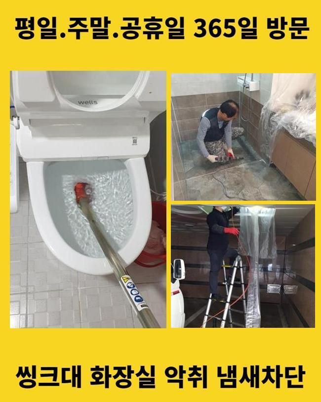
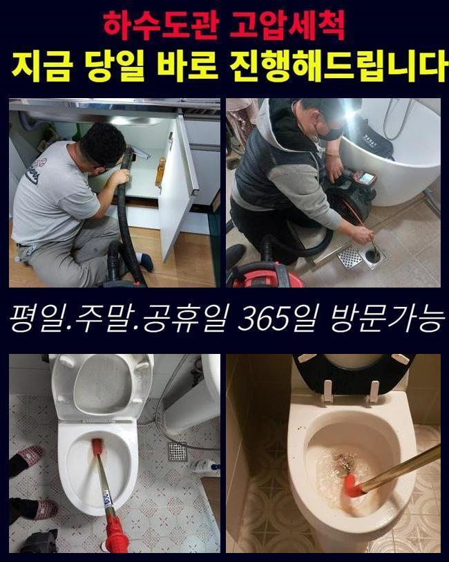
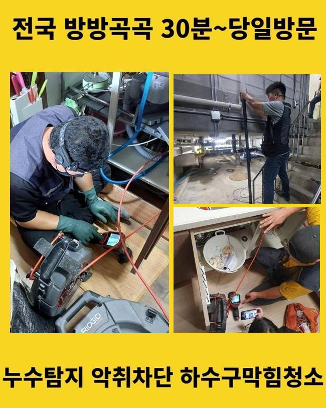
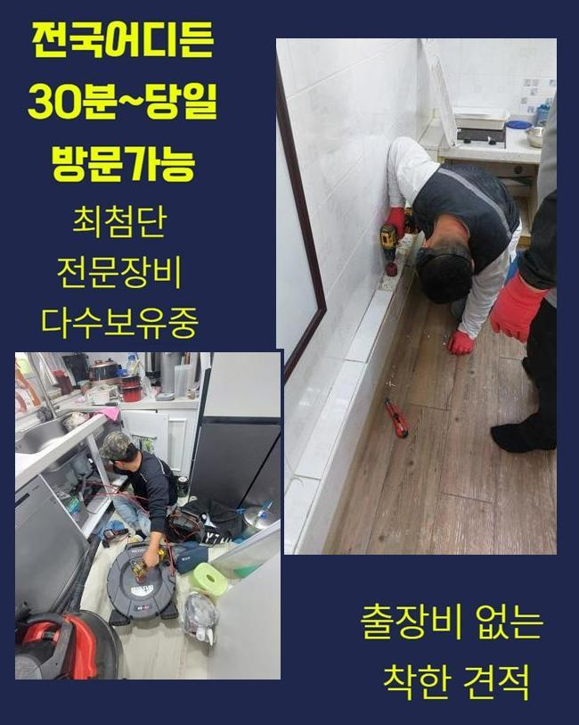
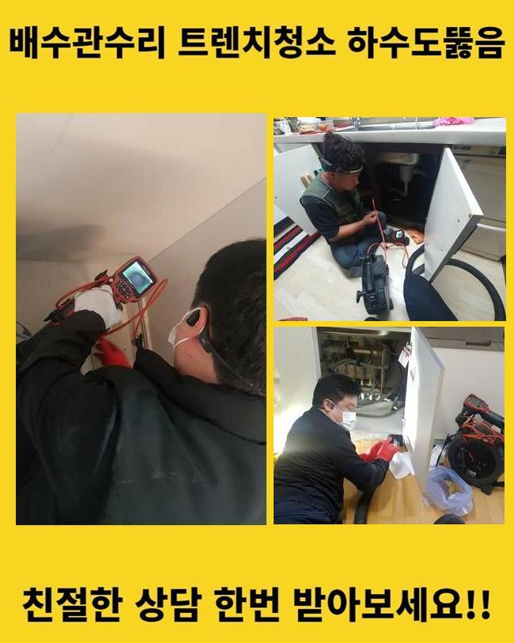
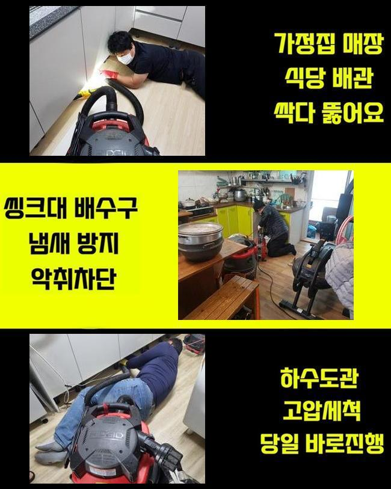

🏠 용산 하수구막힘 원효로1동 냄새차단 누수탐지
용인 하수구막힘 전문 시공 후기

📋 작업 개요
- 위치: 용인
- 서비스 유형: 하수구막힘, 배관막힘, 맨홀막힘, 누수수리, 역류해결, 배관청소, 고압세척, 악취차단
- 작업 일시: 2025. 5. 14. 12:27
- 업체명: 하수구수사대 (010-5615-2118)
🔍 문제 상황
용산 하수구막힘 원효로1동 냄새차단 누수탐지
하수시설은 주거지나 가게같은 곳에 필수적으로 배치하는 시설이예요
오염된 물을 순환시켜 깨끗한 일상을 유지하도록 도와주며 질병의 발생으로부터 보호합니다
이러한 배수구가 막혀버려 순환이 되지 못하는 경우엔 누적된 불순물이 부패되어 썩는듯한 냄새들이 발생하고 하수구가 있는 곳에서 크고 작은 문제들이 일어나게 됩니다
이로 인해 하수가 거꾸로 올라오거나 깨끗한 물을 사용할 수 없는 상황을 초래하게 되면서 불편한 상황이 발생합니다
점심쯤에 하수관 역류사태로 긴급한 연락을 받고 서둘러 목적지로 출발했습니다
고객님께서 알려주신 집부터 확인하였습니다
확인해본 결과로는 집안에 계신 고객님께서 수도를 사용하실때마다 부동전에 연결 되어있는 하수관에서 오수가 역류하는 상황들이 일어나고 있었어요
특히나 화장실에서 수도를 이용하시는 경우에 배수관을 따라서 나는 고약한 냄새까지 심각했어요

🔎 원인 분석
💡 전문가 진단: 정밀 진단 장비를 사용하여 슬러지의 고착 여부를 판명하고 타격/세척 작업을 실시했습니다.
이러한 문제들을 처리하고자 내시경장치를 사용해서 중심 맨홀 내부상태를 확인했습니다
음식 기름등이 부패되며 하수라인에서 지독한 악취까지 발생시키고 있었고 집으로 오수가 올라오는 등의 일도 생길 수 있기때문에 신속한 시공에 들어갔어요
메인관의 중요성부터 설명 해드리겠습니다
중심관의는 일상적으로 하는 모든 생활에서 발생하는 오염된 물을 배출시키는 것에 있어 큰역할을 하는 곳입니다
메인 배관이 막히게 된다면 내부에서부터 흐르지못한 오수가 부동전쪽에서 역류하는 상황까지 발생하는 경우가 많습니다
이럴때는 내부쪽에서 배관만 확인한다고 해서 상황을 해결하기 어렵기때문에 중심이 되는 본관을 수리해야지만 배수등이 정상적으로 가능합니다
일반 가정집에서 생기는 문제들은 자체적으로 처리하시는 경우도 있겠으나 사이즈가 큰 메인 배수구는 고압의 세척기기를 이용하여 딱딱하게 변한 오염물질을 세척합니다
고압세척기기의 다양한 크기의 선은 하수관의 끝까지 모두 닿기때문에 신속정확하게 세척작업이 진행됩니다
본관에 고압세척기기를 사용해서 머리카락과 침전물을 세척했습니다
이후에 내시경장비를 재투입하여 오수가 정상적으로 순환되는지 재확인 하였습니다

🔧 작업 과정
의뢰인께서 모니터를 함께 보시면서 배수구가 완벽하게 청소 완료 된 것을 보고 안심하시며 마지막 주변 정리까지 꼼꼼하게 부탁 하셨습니다
두번째 현장지에 도착하여 고장난 하수설비를 수리했어요
이번에는 세탁기가 있는 베란다와 화장실에서 오수가 역방향으로 진행하며 불순물이 같이 올라오며 지독한 냄새까지 풍기고 있는 상태였습니다
이러한 경우에는 세탁실의 배수관을 통하여 배관의 청소를 시작하는 것이 일반적이나 이번에는 P트랩이 설치되어 있는 상태라서 난관에 봉착했어요
구조가 복잡한 트랩은 벌레등의 유입을 막는것에 유리하겠지만 모양상 불순물이 누적되어 배수구가 막히게 되는 원인을 제공합니다
이러한 현장에서는 고압세척기기를 이용할 수 없는 구조인 확률이 높습니다
노즐선을 투입할 수 없으므로 사례자님께 추가적인 비용등을 발생시키지 않고자 효율적인 작업방법을 찾아내야 했습니다
복잡하고 어려운 트랩의 구조상 고압세척장치를 사용하게 되면 하수라인에 피해를 줄 수도 있기때문에 플랙스 샤프트기를 이용해 작업을 진행했습니다
샤프트장치는 회전하는 힘으로 하수관에 적재된 슬러지를 제거합니다
샤프트장비는 하수관을 안전하게 보호하면서도 배관의 끝까지 들어갈 수 있어요
솔질을 할 수 있는 장치를 샤프트기기에 부착하여 침전물을 세척할 수 있기때문에 구부러진 부위까지 빠르게 진입이 가능하여 배수라인 끝부분에 딱딱하게 변형된 노폐물도 완전히 제거할 수 있어요
몇 번의 작업만으로는 완전하게 세척되지 않았으므로 샤프트기계를 지속적으로 활용하여 굳어있는 이물질들을 완벽하게 제거했어요
하수구 세척이 끝난 후에 배수의 흐름이 정상적으로 순환되는지 확인하였고 의뢰인께서도 역류현상이 일어났던 배수구를 직접 보시고나서야 안심하셨습니다
배수구가 막힌 경우에 원인을 제거하지 않고 계속 사용하신다면 하수관에 적재된 노폐물이 썩게되면서 고약한 냄새가 올라오며 배수가 잘 되질 않아서 오수가 거꾸로 올라오는 문제들이 발생합니다
배수관 속에서 압력을 받는 스트레스가 계속적으로 발생하면 배수라인 내부에 피해가 계속 진행돼 파손의 위험이 생기며 고객의 금전적인 부담과 시간적인 소모까지 이어집니다


✅ 작업 완료
하수관 역류사고가 발생하셨다면 전문 기술진에게 문의하셔서 신속하게 대비책을 준비하셔야 합니다
오늘 현장에서는 배수관 역류현상을 해결하였고 배관에서 올라오는 냄새로 인한 세척까지 완벽하게 마무리했습니다
사례자님의 생활 속 습관등을 바꾸셔야 함을 안내 해드리고 배수관 문제등이 재발하는 일이 없도록 꼼꼼하게 확인하였습니다
배관의 문제등이 발생하셨다면 밤이든 낮이는 저희 전문가에게 의뢰 맡겨주시면 신속정확하게 처리 해드리겠습니다



⚠️ 베란다 누수 및 방수 관리 방법
- ✅ 비가 많이 올 때 창틀 주변이나 아래층 천장에 얼룩이 생기는지 정기적으로 확인해 보세요.
- ✅ 우수관 주변 실리콘 마감이 들뜨거나 깨진 틈새가 있는지 손상 여부를 수시로 체크하세요.
- ✅ 베란다 바닥 타일의 줄눈(메지)이 소실되면 그 틈으로 물이 침투하여 누수가 유발됩니다.
- ✅ 누수 의심 증상 발견 시 방치하면 아래층 손실이 커지므로 즉시 전문가의 진단을 받으십시오.
💡 핵심 정리
- 확실한 장비 작업(내시경 점검 및 샤프트 스케일링)으로 원인을 뿌리 뽑습니다.
- 작업 후 1년 이내에 동일한 부위 재발 시 100% 무상 A/S 서비스를 보장합니다.
- 서울 · 경기 · 인천 전 지역에 24시간 언제든 긴급 출동할 수 있도록 항시 대기 중입니다.
❓ 자주 묻는 질문 (FAQ)
🚨 용인 하수구막힘 문제로 고민이신가요?
정확한 원인 진단과 확실한 시공으로 재발 없는 해결을 약속드립니다.
24시간 긴급 출동 | 서울 · 경기 · 인천 전지역 | 1년 내 재발 시 무상 A/S